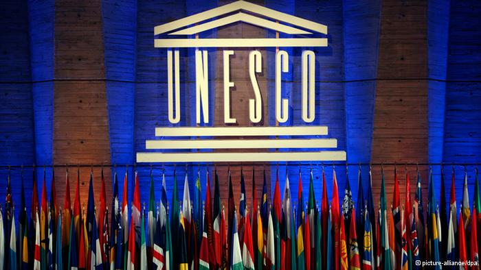

Kerjasama multilateral merupakan kerjasama internasional yang melibatkan hubungan antar tiga negara ataupun lebih tanpa memandang latar belakang wilayah tersebut untuk mencapai suatu tujuan yang biasa bersifat umum. Biasa kerjasama multilateral dibuat dalam suatu organisasi besar internasional dan mempunyai suatu tujuan tertentu sesuai dengan bidang yang sudah disepakati.
Organisasi ini didirikan dengan tujuan untuk memajukan pendidikan di berbagai negara serta juga memiliki tujuan untuk meningkatkan kualitas dan akses pendidikan global.
Organisasi ini didirikan dengan tujuan untuk memperlancar dan menciptakan stabilitas sistem keuangan internasional seperti pertukaran mata uang untuk memudahkan terlaksana kegiatan bisnis antar negara-negara di dunia.
Organisasi ini didirikan dengan tujuan untuk memberi pertolongan terhadap anak-anak yang kurang mampu dengan latar belakang yang tidak dipandang melalui menjaga keberlangsungan hidup mereka dan potensi mereka yang ditingkatkan.